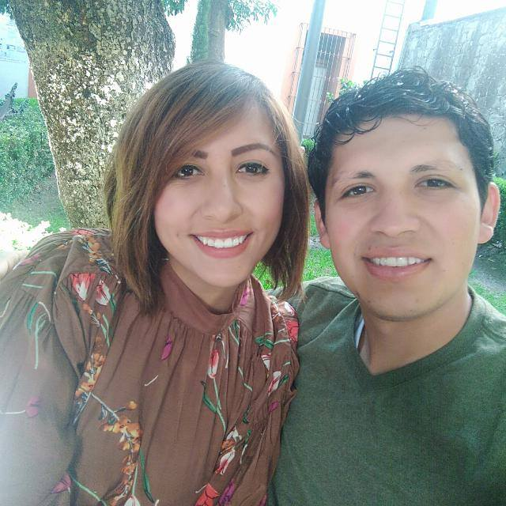

About Me
My Name is Andres Montero and I am from Costa Rica. I am taking applied technology as degree
I have been working with technology for the last 4 years, I work as Idenity & Access Managment Consultant ,which is a subsection of Cybersecuirty.
Cybersecuirty is a very insterting field because you are not always doing the same. Sometimes you are working on implementation projects, sometimes you are working on architecture, something you are working with policies and procedures and sometimes you need to wirte code, that is why I am taking this class. I would like to understand web development for those days when we need to understand how to protect a web services. I believe if you don't know how something works you can't protect it
I have been a member of the church my whole life, I served in Mexico from 2014-2016. Me and my wife served in the same Mission in the Saltillo Mexico Mission. She is from the center of Mexico, close to Mexico city. We have been living in Costa Rica for the last 4 years, but now that we can work from anywhere I asked my company if I could work from Mexico city and they were happy to give me the opportunity to work from Mexico. So this semester I will need to work on my classes and move out there. It would be a great aventure!
I am happy to be here and I look forward to work with all of you!